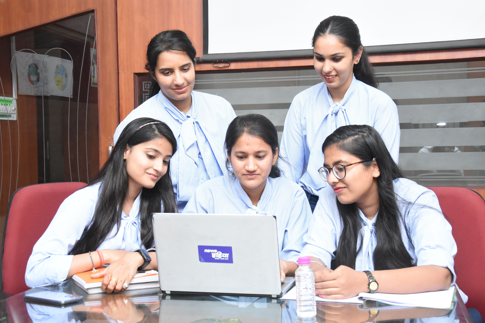

Introduction to ENM and MaxEnt
Introduction to Ecological Niche Modeling (ENM) and MaxEnt, ecological niche concepts and Species Distribution Models (SDMs).
Build a foundation in ecological niche modelling and learn how species occurrence data and environmental variables can be used to understand and predict species distributions.
Ecological Niche Modelling (ENM) is an important approach in ecology and biodiversity research. It uses species occurrence records and environmental variables to identify areas with suitable environmental conditions for a species. These models support the study of species distributions, habitat suitability, potential range shifts and ecological responses to environmental change.
This five-day hybrid certificate course introduces participants to the concepts, datasets and analytical workflow involved in ecological niche modelling using MaxEnt. The programme is designed to connect ecological understanding with geospatial data processing and model interpretation.
Learning approach: A combination of online learning and in-person practical training in ecological niche modelling, covering species distribution, environmental variables, MaxEnt, QGIS and R-based modelling techniques.

Course overview
Introduction to Ecological Niche Modeling (ENM) and MaxEnt, ecological niche concepts and Species Distribution Models (SDMs).
Installation and use of QGIS, R, RStudio, Java and MaxEnt.
Species occurrence and environmental data acquisition from relevant databases.
Spatial data processing and GIS analysis using QGIS and R.
MaxEnt model development, validation and habitat suitability mapping.
Future climate projections, case studies, lecture notes and tutorial videos.
Basic knowledge of ecology, biodiversity or related life sciences. No prior experience in GIS, R or MaxEnt is required.
Course syllabus
A five-day learning programme combining theoretical sessions and practical training in ecological niche modelling.
Provide participants with theoretical knowledge and hands-on training in Ecological Niche Modeling (ENM) using MaxEnt, QGIS and R, enabling them to independently develop, evaluate and interpret species distribution models for conservation, ecology and climate change applications.
Organisers & collaborators
The institutions supporting this learning programme.
Tropical Biodiversity Action and Research Centre (TBARC) is an organisation working to promote biodiversity research, conservation awareness and scientific engagement. Through training programmes, workshops, research initiatives and outreach activities, TBARC aims to connect students, researchers and communities with emerging themes and methods in biodiversity science.
tbarc.in ↗KAHM Unity Women's College, Manjeri, established in 1991 by MECA, is the first women’s higher education institution in Malappuram district. Set on a 17-acre campus, the autonomous college is affiliated with the University of Calicut and serves 1,700+ students through 10 departments and 75+ faculty members. It holds NAAC A Grade accreditation.
unitywomenscollege.ac.in ↗Join the five-day hybrid certificate course and develop your understanding of MaxEnt and its applications in ecological research.
Register Now